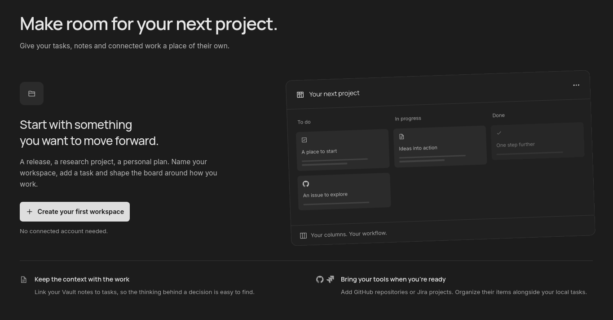
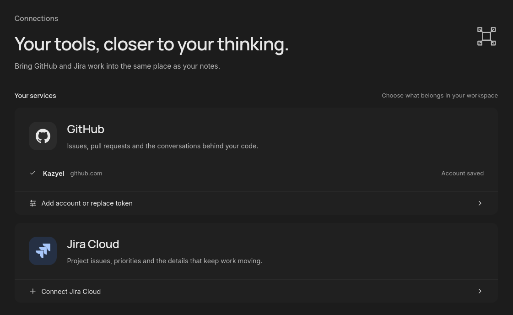

Early development · Linux
Keep the thinking with the work.
Notes, documents, and project boards. One local workspace.
Your files. No account required.
Work in context
A workspace for
every project.
Keep tasks, notes, and documents together. Add GitHub and Jira when you need them.

01WriteMarkdown with preview and split view
02ReadPDF and DOCX beside your notes
03OrganizeTasks and linked files
Local by design
Your files.
Your folder.
Your Vault keeps files local. Markdown stays readable outside Adamant. PDF and DOCX originals stay intact.
About your data
my-vault
content
Project notes.md
Research.pdf
Proposal.docx
.adamant
Take your folder with you.
Optional connections
GitHub and Jira.
Alongside your notes.
Follow issues, review pull requests, and read discussions alongside your local tasks.
Moving cards leaves GitHub and Jira statuses unchanged.

Build from source
Room to think.
Early development. Tested on Linux.
Setup guide